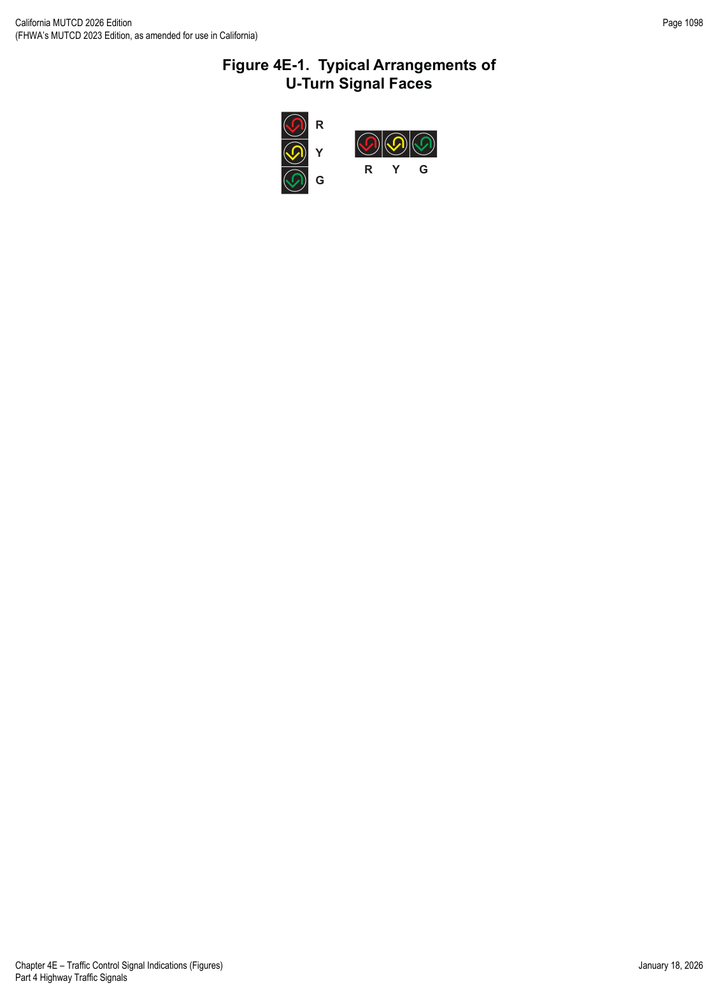
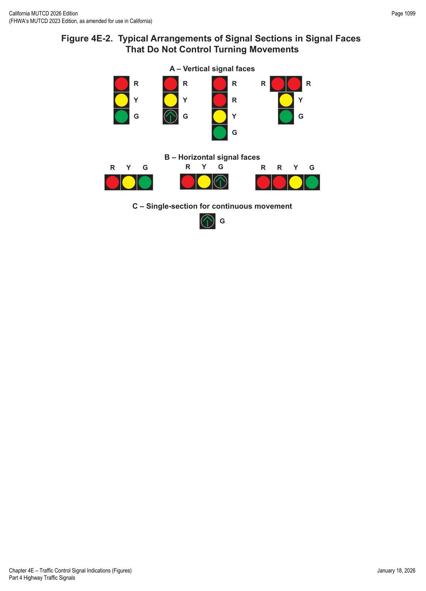

Part 4 · Highway Traffic Signals · Chapter 4E
Traffic Control Signal Indications
Design, illumination, color, shape, size, and physical arrangement requirements for every circular and arrow indication in a vehicular signal face — the foundation that Chapters 4F through 4H build sequencing and operation rules on top of.
4E.01Signal Indications — Design, Illumination, Color, and Shape
Standard — Mandatory Requirement
- 01The illuminated part of each signal indication shall be circular or arrow, except for bicycle symbol signal indications, pedestrian signal heads, light rail transit signal indications, and lane-use control signals.
- 02Letters or numbers (including those associated with countdown displays) shall not be displayed as part of a vehicular signal indication.
- 03Strobes shall not be used within or adjacent to any signal indication.
- 04Except for the flashing vehicular and pedestrian signal indications and the distinctive indications for emergency-vehicle preemption (see Section 4F.19) that are expressly allowed elsewhere in this Part, flashing displays shall not be used within or adjacent to any signal indications.
- 05Each circular signal indication shall emit a single color: red, yellow, or green.
- 06Except as provided in Paragraph 7, each arrow signal indication shall emit a single color: red, yellow, or green.
Option — Permissive
- 07A bimodal signal section that is capable of alternating between the display of a GREEN ARROW signal indication and a YELLOW ARROW signal indication, both pointing in the same direction, may be used provided that both colors are never displayed simultaneously.
Standard — Mandatory Requirement
- 08The arrow, which shall show only one direction, shall be the only illuminated part of an arrow signal indication.
- 09Arrows shall be pointed: (A) vertically upward to indicate a straight-through movement; (B) horizontally in the direction of the turn to indicate a turn at approximately or greater than a right angle; (C) upward with a slope at an angle approximately equal to that of the turn if the angle of the turn is substantially less than a right angle; or (D) in a manner that directs the driver through the turn if a U-turn arrow is used (see Figure 4E-1).
- 10Except as provided in Paragraph 11, the requirements of Chapters 1 and 2 of the ITE publication "Equipment and Materials Standards of the Institute of Transportation Engineers" that pertain to signal head design aspects affecting the display of signal indications shall be met for signal optical units that use incandescent lamps within optical assemblies that include lenses. Except as provided in Paragraph 11, the requirements of the ITE publications "Vehicle Traffic Control Signal Heads: Light Emitting Diode (LED) Circular Signal Supplement" (2005) and "Vehicle Traffic Control Signal Heads: Light Emitting Diode (LED) Vehicle Arrow Traffic Signal Supplement" (2008) that pertain to those same design aspects shall be met for LED traffic signal modules.
Guidance — Recommended Practice
- 11The intensity and distribution of light from each illuminated signal lens or LED signal module should comply with the publications specified in Paragraph 10, as appropriate.
Support — Background/Explanatory
- 12References to signal lenses in this Section are not intended to limit signal optical units to incandescent lamps within optical assemblies that include lenses. Research has produced signal optical units that are not lenses, such as LED traffic signal modules — some practical for all signal indications, some practical only for specific types such as visibility-limited signal indications.
Guidance — Recommended Practice
- 13If a signal indication is so bright that it causes excessive glare during nighttime conditions, some form of automatic dimming should be used to reduce its brilliance.
4E.02Size of Vehicular Signal Indications
Standard — Mandatory Requirement
- 01There shall be three nominal diameter sizes for vehicular signal indications: 4 inches, 8 inches, and 12 inches.
- 02Four-inch signal indications shall only be used for bicycle signal faces per Section 4H.07.
- 03Twelve-inch signal indications shall be used for all arrow signal indications.
- 04Except as provided in Paragraph 5, 12-inch signal indications shall be used for all circular signal indications in all new signal faces.
Option — Permissive
- 05Eight-inch circular signal indications may be used in new signal faces only for: (A) the green or flashing yellow signal indications in an emergency-vehicle traffic control signal (see Section 4M.02); (B) the circular indications in a signal face controlling the approach to a downstream signalized location where two adjacent locations are close together and it is impractical (due to high approach speeds, horizontal/vertical curves, or other geometric factors) to install visibility-limited signal faces for the downstream approach; (C) the circular indications in a signal face located less than 120 feet from the stop line on a roadway with a posted or statutory speed limit or operating speed of 30 mph or less; (D) the circular indications in a supplemental near-side signal face; (E) the circular indications in a supplemental signal face installed solely to control pedestrian movements rather than vehicular movements; and (F) the circular indications in a flashing beacon (see Chapter 4S).
- 06Different sizes of signal indications may be used in the same signal face or signal head, provided the signal face or head complies with Paragraphs 3 through 5.
In practice: the 8-inch option is the exception, not the default — new installations should default to 12-inch circular indications unless one of the six specific conditions in Paragraph 5 clearly applies.
4E.03Positions of Signal Indications Within a Signal Face — General
Support — Background/Explanatory
- 01Standardization of the number and arrangement of signal sections in vehicular signal faces enables road users who are color-vision deficient to identify the illuminated color by its position relative to other signal sections.
Standard — Mandatory Requirement
- 02Unless otherwise provided in this Manual for a particular application, each signal face at a signalized location shall have three, four, or five signal sections. Unless otherwise provided, if a vertical signal face includes a cluster (see Section 4E.04), the signal face shall have at least three vertical positions.
- 03A single-section signal face shall be permitted at a traffic control signal if it consists of a continuously-displayed GREEN ARROW signal indication used to indicate a continuous movement.
- 04The signal sections in a signal face shall be arranged in a vertical or horizontal straight line, except as otherwise provided in Section 4E.04.
- 05The arrangement of adjacent signal sections in a signal face shall follow the relative positions listed in Sections 4E.04 or 4E.05, as applicable.
- 06If a signal section displaying a CIRCULAR YELLOW signal indication is used, it shall be located between the signal section that displays the red signal indication and all other signal sections.
- 07If a U-turn arrow signal section is used for a U-turn to the left, its position shall be the same as stated in Sections 4E.04/4E.05 for a left-turn arrow signal section of the same color. If used for a U-turn to the right, its position shall be the same as for a right-turn arrow signal section of the same color.
- 08A U-turn arrow signal indication pointing to the left shall not be used in a signal face that also contains a left-turn arrow signal indication. A U-turn arrow signal indication pointing to the right shall not be used in a signal face that also contains a right-turn arrow signal indication.
Option — Permissive
- 09Within a signal face, two identical CIRCULAR RED or RED ARROW signal indications may be displayed immediately horizontally or vertically adjacent to each other in a vertical signal face (see Drawing A, Figure 4E-2), or immediately horizontally adjacent in a horizontal signal face (see Drawing B, Figure 4E-2), for emphasis.
- 10Horizontally-arranged and vertically-arranged signal faces may be used on the same approach provided they are separated to meet the lateral separation spacing required in Section 4D.07.
Support — Background/Explanatory
- 11Figure 4E-2 illustrates typical arrangements of signal sections in signal faces that do not control separate turning movements. Figures 4F-1 through 4F-7 illustrate typical arrangements in left-turn signal faces. Figures 4F-8 through 4F-14 illustrate typical arrangements in right-turn signal faces.
Standard — Mandatory Requirement
- 12There shall be at least two signal faces for each movement on each signal-controlled approach.
Guidance — Recommended Practice
- 13Supplemental signal faces should be considered if any of the following conditions exist: (A) the area is rural; (B) the area is urban and the signal is the first one on a particular highway; (C) the roadway is striped for two or more approach lanes; (D) visibility of the signal is affected by alignment or obstructions.
Support — Background/Explanatory
- 14On an undivided roadway, the signal faces for each through approach of an intersection are usually placed at the far right and far left corners.
Option — Permissive
- 15The signal faces for two or more approaches may be combined on a single standard.
Support — Background/Explanatory
- 16It is generally desirable to locate signal faces on separate standards at curb returns. This maximizes visibility of the signal faces for the controlled approach while minimizing visibility of signal faces intended for the cross-street approach.
Guidance — Recommended Practice
- 17Separate standards should be considered whenever the curb return radius is greater than 10 feet.
- 18The preferred locations for new installations of signal faces for fully-protected left-turn movements at a typical intersection are on a mast arm of sufficient length to place one signal face as nearly as practical in line with the left-turn lane, with the second face on a standard at the far left corner.
Option — Permissive
- 19Unusual roadway geometrics, wide medians, wide roadways, more than one left-turn lane in the same direction, or other factors may require left-turn signal face(s) to be mounted on standard(s) in a median to satisfy visibility requirements.
- 20A signal face containing a circular green indication may be located in a far median only when: (A) the signal phasing provides a protected left-turn movement; or (B) the signal face has some form of visibility control so indications are not visible to traffic in the left-turn storage lane; or (C) it does not face a left-turn storage lane; or (D) a LEFT TURN YIELD ON GREEN (symbolic circular green) (R10-12) sign is installed below that signal face.
- 21A signal face containing a circular green indication may be located in the near median where there is a left-turn storage lane and no associated left-turn phase.
- 22Supplemental signal faces may be placed at a near-side location or suspended from a mast arm.

4E.04Positions of Signal Indications Within a Vertical Signal Face
Standard — Mandatory Requirement
- 01In each vertically-arranged signal face, all signal sections displaying red signal indications shall be located above all signal sections that display yellow and green signal indications.
- 02In vertically-arranged signal faces, each signal section displaying a YELLOW ARROW signal indication shall be located above the signal section that displays the GREEN ARROW signal indication to which it applies.
- 03The relative positions of signal sections in a vertically-arranged signal face, from top to bottom, shall be as follows: CIRCULAR RED; steady and/or flashing left-turn RED ARROW; steady and/or flashing right-turn RED ARROW; CIRCULAR YELLOW; CIRCULAR GREEN; straight-through GREEN ARROW; steady left-turn YELLOW ARROW; flashing left-turn YELLOW ARROW; left-turn GREEN ARROW; steady right-turn YELLOW ARROW; flashing right-turn YELLOW ARROW; right-turn GREEN ARROW.
- 04If a bimodal signal section (see Section 4E.01) is used in a vertically-arranged signal face, it shall occupy the same position relative to the other sections as the signal section that displays the GREEN ARROW signal indication would occupy.
Option — Permissive
- 05In a vertically-arranged signal face, signal sections that display signal indications of the same color may be arranged horizontally adjacent to each other at right angles to the basic straight-line arrangement to form a clustered signal face (see Figures 4E-2, 4F-4, 4F-6, 4F-10, 4F-11, 4F-13, and 4F-15).
Support — Background/Explanatory
- 05aRefer to FHWA's List of Known Errors for an error in the Paragraph 5 text. Refer to Section 1A.04 for more details.
Standard — Mandatory Requirement
- 06Such clusters shall be limited to the following: (A) two identical signal sections; (B) two or three different signal sections that display signal indications of the same color; or (C) for only the specific case described in Section 4F.16 (see Drawing B, Figure 4F-15), two signal sections, one displaying a GREEN ARROW and the other a flashing YELLOW ARROW signal indication.
- 07Except as otherwise provided in Sections 4F.04, 4F.08, 4F.11, and 4F.15 for a three-section separate turn signal face with a bimodal signal section that displays a flashing YELLOW ARROW signal indication, the signal section that displays a flashing yellow signal indication during steady mode operation: (A) shall not be placed in the same vertical position as the signal section that displays a steady yellow signal indication, and (B) shall be placed below the signal section that displays a steady yellow signal indication.
Support — Background/Explanatory
- 08Sections 4J.02 and 4N.02 contain exceptions to the provisions of this Section that are applicable to hybrid beacons.
4E.05Positions of Signal Indications Within a Horizontal Signal Face
Standard — Mandatory Requirement
- 01In each horizontally-arranged signal face, all signal sections that display red signal indications shall be located to the left of all signal sections that display yellow and green signal indications.
- 02In horizontally-arranged signal faces, each signal section that displays a YELLOW ARROW signal indication shall be located to the left of the signal section that displays the GREEN ARROW signal indication to which it applies.
- 03The relative positions of signal sections in a horizontally-arranged signal face, from left to right, shall be as follows: CIRCULAR RED; steady and/or flashing left-turn RED ARROW; steady and/or flashing right-turn RED ARROW; CIRCULAR YELLOW; steady left-turn YELLOW ARROW; flashing left-turn YELLOW ARROW; left-turn GREEN ARROW; CIRCULAR GREEN; straight-through GREEN ARROW; steady right-turn YELLOW ARROW; flashing right-turn YELLOW ARROW; right-turn GREEN ARROW.
- 04If a bimodal signal section (see Section 4E.01) is used in a horizontally-arranged signal face, the section displaying the dual left-turn arrow signal indication shall be located immediately to the right of the section displaying the CIRCULAR YELLOW signal indication; the section displaying the straight-through GREEN ARROW signal indication shall be located immediately to the right of the section displaying the CIRCULAR GREEN signal indication; and the section displaying the dual right-turn arrow signal indication shall be located to the right of all other signal sections.
- 05Except as otherwise provided in Sections 4F.04, 4F.08, 4F.11, and 4F.15 for a three-section separate turn signal face with a flashing YELLOW ARROW signal indication, the signal section that displays a flashing yellow signal indication during steady mode operation: (A) shall not be placed in the same horizontal position as the signal section that displays a steady yellow signal indication, and (B) shall be placed to the right of the signal section that displays a steady yellow signal indication.

★ Key Takeaways — Chapter 4E
- Every circular indication is a single color (red, yellow, or green); every arrow indication is a single color and a single direction — only bimodal sections may alternate between green and yellow arrows of the same direction.
- Three nominal sizes exist: 4-inch (bicycle only), 8-inch (limited legacy/special cases), and 12-inch (the default for all new circular and all arrow indications).
- Signal faces have 3–5 sections, arranged in a strict vertical or horizontal order — red above/left of yellow/green, yellow arrows above/left of the green arrows they apply to — so color-vision-deficient drivers can read position as color.
- At least two signal faces are required per movement per approach; supplemental faces are recommended for rural areas, first signals on a highway, multi-lane approaches, or obstructed visibility.
- Clustering (same-color sections side by side at right angles) is permitted only in narrowly defined combinations, and a green circular indication in a median location carries strict siting conditions.